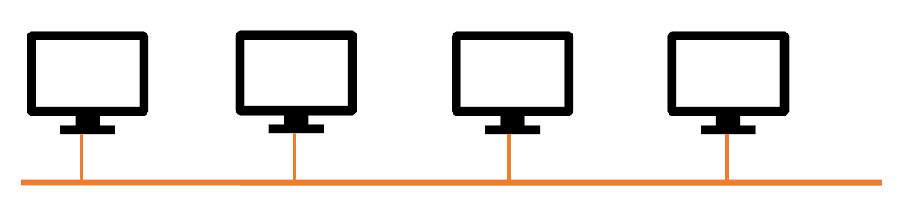

1. Data communication is defined as the exchange of data between two or more connected devices over some types of transmission medium, such as copper cable or the Internet. These devices must be capable of both sending and receiving data. The 5 main components of data communication are:
- Sender: A sender is a device that can send data over a network, such as a computer, a mobile phone, a broadcaster, etc.
- Receiver: A receiver is a device that can receive data from the network, such as a radio, a printer, etc.
- Message: The data exchanged between the sender and the receiver.
- Transmission medium: It is the path that the message travels between the origin and the destination. This path could be either wired (cable) or wireless (the Internet).
- Protocols: It is a set of rules and agreements between devices that must be followed by the communicating parties in order to have successful and reliable data communication.
2. The OSI model includes 7 layers, from data to network:
- Layer 7 – Application: The Application Layer is located at the very top of the OSI Model layer, where network applications run. These programs generate the data that must be sent across the network. This layer also facilitates access for application services to access the network and present information to the user.
- Layer 6 – Presentation: The Presentation Layer represents the preparation or translation of the application format from or to the network format. In other words, the layer translates, encrypts, and compresses data, so that they could be used by upper or lower layers.
- Layer 5 – Session: The Session Layer creates a session in which connected devices on a network can communicate with each other. The layer establishes, manages, and terminates sessions, as well as security and authentication.
- Layer 4 – Transport: The layer serves the Application Layer and receives services from the Network Layer. It is in charge of delivering the entire message from beginning to end. The transport layer also provides reliable process-to-process message delivery and error recovery. Segments are the units of data in this layer. A good example of this layer is the Transmission Control Protocol (TCP).
- Layer 3 – Network: The Network Layer is responsible for data transfer between hosts on various networks. It also handles packet routing, which is the determination of the quickest path to send the packet from the available routes. The network layer inserts the IP addresses of the sender and receiver into the header. Packets are the units of data in this layer.
- Layer 2 – Data Link: The Data Link Layer is in charge of message transport from node to node. This layer's primary duty is to provide error-free data flow from one node to another over the physical layer. When a packet enters a network, it is DLL's obligation to send it to the Host using its MAC address. Frames are the units of data in this layer. The layer also organizes bits from the physical into frames.
- Layer 1 – Physical: The Physical Layer manages the physical connection between the devices. Bits are the units of data in this layer. It is in charge of sending individual bits from one node to the next. When this layer receives data, it converts the incoming signal into 0s and 1s and sends them to the Data Link layer, which reassembles them into frames. The layer also provides mechanical and electrical specifications.
3. - Bus topology: A shared wire connects all devices (such as PCs in a computer network). The end systems' connection to the bus is passive. This implies that each end system can read data from the bus but is not responsible for passing it to other terminals. A data unit is always received by all end systems on a bus, even though the data unit is normally only intended for one end system. As a result, only one end system may transmit a data unit through the bus at any given moment. Otherwise, data units from multiple end systems would overlap and cannot be correctly received. A termination resistor is used to prevent signal reflections at the cable ends.

- Star topology: All end systems in a star topology are connected to one another via an extra network component (star coupler) utilizing their own cables. The star coupler is not the end of the line. It just serves to send data units. Every communication is routed through the star coupler as a result of this setup. There are two kinds of star couplers:
• A hub sends signals received on one port to all other ports. This is quite straightforward and hence inexpensive to implement because no addresses must be assessed, among other reasons. As a result, only one device may transfer data at the same time. Otherwise, collisions, such as in bus topology, may occur.
• A switch forwards signals selectively, that is, just to the end system that will receive the data unit. This necessitates the evaluation of addresses during forwarding and the management of which end system is linked to which port. However, this has the advantage of allowing concurrent communication across end systems. For example, an end system at port 1 can transfer a data unit to an end system at port 2, while end systems at ports 3 and 4 interact with one another simultaneously. The number of parallel communications that are actually possible is determined by the switch's internal capabilities.
- Tree topology: A tree topology is formed when numerous systems of star topology are merged to form a bigger unit by linking star couplers together. This structure is frequently utilized as the foundation for a hierarchical network, which is commonly employed in office buildings.

- Mesh topology: There are redundant connections in a mesh architecture to safeguard the network from breakdowns. In a completely meshed network, all network nodes are linked to one another. Even with a few nodes, this situation is just theoretical because the cost and labor for building all of the mesh connections grow substantially. A partly meshed network is one in which the possible redundant connections are only partially realized. In this instance, you might, for example, build the network so that each node is linked to at least three other nodes. Then, even if two links fail, you may continue.

4.- Local area network (LAN): A LAN is a network that exists inside the confines of an organization and can range in size from 10 m to 10 km. Ethernet technology has become the only option for local area networks with no specific requirements. The situation is similar with wireless local area networks, where only Wireless LAN technology is now available.
- Metropolitan area network (MAN) is a network that spans between 10 and 100 kilometers. There were formerly particular technologies (like FDDI) created for MANs. Instead, LAN or WAN technology is employed nowadays.
- Wide area network (WAN): A WAN is a network that spans more than 100 kilometers, such as a national network. Different technologies, such as IP, Ethernet, SDH, OTN, or MPLS, are used in these networks.